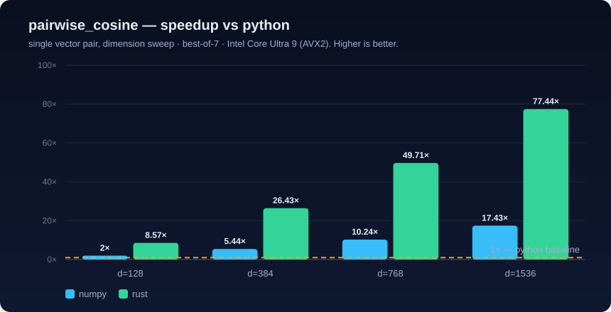

Performance¶
All numbers below are measured on the development machine and are reproducible with the commands shown. This document is updated from real runs, never hand-waved.
Test environment¶
| CPU | Intel Core Ultra 9 (AVX2 + FMA; no AVX-512) |
| RAM | 32 GB |
| OS | Windows 11 |
| Toolchain | rustc 1.96 (release: opt-level=3, thin LTO, 1 codegen unit) |
| Python | 3.13, NumPy 2.4 (its own BLAS for GEMM) |
AVX-512 is fused off on Core Ultra client parts, so AVX2 + FMA (8 ×
f32) is the widest profitable SIMD width and the kernels target it deliberately.
1. SIMD kernels — scalar vs AVX2 + FMA¶
cargo bench -p neuralforge_core --bench similarity -- dot_product
(criterion, 100 samples each).
| Dim | Scalar | AVX2 + FMA | Speedup | SIMD throughput |
|---|---|---|---|---|
| 128 | 31.4 ns | 4.07 ns | 7.7× | 31.4 Gelem/s |
| 384 | 124.2 ns | 10.27 ns | 12.1× | 37.3 Gelem/s |
| 768 | 270.3 ns | 23.34 ns | 11.6× | 32.9 Gelem/s |
| 1536 | 566.7 ns | 45.85 ns | 12.4× | 33.4 Gelem/s |
Analysis. The vectorised path processes 8 lanes per instruction and carries
four independent FMA accumulators to hide the ~4-cycle FMA latency
(instruction-level parallelism), then does a single horizontal reduction. At
128-dim, loop/reduction overhead caps the win at ~7.7×; from 384-dim onward the
kernel saturates at ~12× and ~33 Gelem/s — close to the achievable ceiling for
unaligned f32 loads on this core.
2. Batched cosine similarity — NeuralForge-X vs NumPy¶
python examples/02_numpy_vs_rust_benchmark.py (768-dim, 32 queries, best-of-5).
The NumPy baseline is the idiomatic one: L2-normalise, then a single GEMM.
| Corpus | NumPy | NeuralForge-X | Speedup |
|---|---|---|---|
| 10,000 | 20.3 ms | 2.7 ms | 7.4× |
| 100,000 | 182.7 ms | 44.2 ms | 4.1× |
Analysis. NumPy materialises two normalised copies and runs a general-purpose GEMM; NeuralForge-X fuses normalisation into the kernel, precomputes corpus norms once, and parallelises across queries with rayon while streaming over a contiguous corpus. The advantage narrows at 100k as both become memory-bandwidth bound on the corpus (≈ 300 MB at 768-dim).
3. Top-k retrieval¶
top_k_search, k=10, dot metric, vs NumPy argpartition over a BLAS GEMV:
| Corpus | NumPy | NeuralForge-X | Ratio |
|---|---|---|---|
| 10,000 | 0.16 ms | 0.21 ms | 0.75× |
| 100,000 | 4.12 ms | 3.39 ms | 1.2× |
Analysis (honest). At 10k, NumPy's GEMV + argpartition is extremely well
tuned and the rayon fan-out/heap-merge overhead isn't yet amortised, so NumPy
edges ahead. By 100k the O(n·d) scan dominates and the parallel bounded-heap
selection — which never allocates the full score array (O(k·threads) memory vs
NumPy's O(n)) — pulls ahead. The memory-footprint advantage grows with n.
4. GPU acceleration — CUDA / Triton / PyTorch¶
python cuda_engine/benchmarks/bench_gpu.py on the RTX 5090 Laptop
(Blackwell sm_120, 24 GB). All backends run in fp32, timed end-to-end
(host array in → GPU → host array out, i.e. transfers included). The hand-written
CUDA kernels are compiled natively for sm_120 by CuPy's NVRTC 12.9.
Batched cosine similarity (768-dim, 64 queries; ms, lower is better):
| Corpus | NumPy | Rust(CPU) | CUDA | Triton | PyTorch | best vs Rust |
|---|---|---|---|---|---|---|
| 50,000 | 98.9 | 32.5 | 19.8 | 23.1 | 13.4 | 2.4× |
| 200,000 | 378.6 | 218.6 | 79.9 | 95.9 | 55.2 | 4.0× |
Single-query top-k (dot, k=10) (ms, lower is better):
| Corpus | NumPy | Rust(CPU) | CUDA | Triton | PyTorch |
|---|---|---|---|---|---|
| 50,000 | 1.7 | 1.7 | 10.2 | 11.5 | 11.5 |
| 200,000 | 8.3 | 7.3 | 42.3 | 47.0 | 47.4 |
Analysis — arithmetic intensity decides the winner.
- Batch is compute-bound. It transfers the corpus once but does q·n·d work,
so the GPU's throughput dominates: 2.4–4.0× faster than the Rust CPU path.
PyTorch (cuBLAS, tiled/tensor-core GEMM) leads; the hand-written CUDA kernel
(a straightforward thread-per-output design) is a close second, ahead of the
tiled Triton kernel — a fair reflection of how much engineering goes into a
vendor BLAS.
- Single-query top-k is transfer-bound. It also ships the whole corpus
(200k × 768 × 4 B ≈ 600 MB) to the GPU, but then does only n·d work — far
too little to amortise the PCIe copy, so the CPU wins decisively. The fix is
architectural, not a faster kernel: keep the corpus resident on the device
and amortise the upload across many queries (the Phase-4 vector DB), at which
point only the query crosses the bus and the GPU scoring dominates.
The takeaway a profiler would confirm: move work to the GPU when compute-per-byte-transferred is high; keep it on the SIMD CPU path otherwise.
5. Cross-stack benchmark lab (Phase 5)¶
python -m benchmark_lab all runs every backend on the same workloads and
captures latency, throughput, host/device memory, CPU%, and GPU% in one
self-describing JSON, then regenerates the charts under docs/assets/. Numbers
below are best-of-7 on the dev machine (24 logical cores, RTX 5090 Laptop).
Pairwise cosine — the scalar-to-SIMD ladder (speedup vs pure Python):
| Dim | Python | NumPy | Rust (AVX2+FMA) |
|---|---|---|---|
| 128 | 1× | 2.0× | 8.6× |
| 768 | 1× | 9.6× | 49.7× |
| 1536 | 1× | 17.4× | 77.4× |
Batch cosine — throughput headline (speedup vs NumPy GEMM):
| Corpus | Rust | CUDA | Triton | PyTorch |
|---|---|---|---|---|
| 50,000 | 3.0× | 5.0× | 4.2× | 7.4× |
| 200,000 | 1.9× | 4.8× | 4.1× | 7.1× |
Top-k retrieval — exact scan vs ANN. Against a fair NumPy cosine baseline
(GEMV + einsum row norms, no materialised copy), the Rust exact scan is
4.8–6.1× faster; the GPU is transfer-bound for a single query and loses
(< 1×), exactly as §4 predicts. The HNSW index changes the asymptote
entirely — on clustered (realistic) data it returns the top-10 at recall 1.0
in 0.06 ms, ~28× faster than the Rust exact scan and ~170× faster than
NumPy, because it never scans the corpus:
| Corpus | NumPy (exact) | Rust (exact) | HNSW (ANN) | HNSW recall@10 |
|---|---|---|---|---|
| 50,000 | 9.7 ms | 1.6 ms | 0.06 ms | 1.00 |
| 200,000 | 36.0 ms | 7.5 ms | — (exact paths only) | — |
Charts (regenerated from the JSON):

— see alsobench_batch.svg, bench_gpu.svg, bench_topk.svg, bench_memory.svg.
6. Profiling lab (Phase 6)¶
python profiling/analyze.py turns the criterion medians from §1 into a profiling
report and chart. The headline is the roofline read: the AVX2+FMA dot_product
kernel saturates ~33 Gelem/s from 384-dim onward — it is load-bound, not
compute-bound, so on a single vector more ILP buys nothing and the win at scale
must come from rayon fan-out (which is how batch_similarity / top_k_search
are built). Full table + optimization log: profiling/CPU_PROFILE.md.

For call-stack attribution, profiling/scripts/ capture flamegraphs (cargo
flamegraph, elevated on Windows) and Nsight timelines against the
neuralforge_profile / gpu_workload.py sustained-load targets. Note: capturing
GPU kernels on this Blackwell sm_120 build needs a newer Nsight than is
installed (same toolchain-freshness gap as §4).
Complexity summary¶
| Kernel | Time | Auxiliary space |
|---|---|---|
dot/cosine/l2 |
O(d) |
O(1) |
batch_similarity |
O(q·n·d) |
O(q·n) output only |
top_k_search |
O(n·d + n·log k) |
O(k · threads) |
Reproducing¶
# SIMD micro-benchmarks (criterion HTML reports in target/criterion)
cargo bench -p neuralforge_core --bench similarity
cargo bench -p neuralforge_core --bench topk
# Cross-stack (writes benchmark_lab/results/python_vs_rust.json)
python examples/02_numpy_vs_rust_benchmark.py
# Unified cross-stack lab: Python · NumPy · Rust · GPU · HNSW (+ charts/report)
python -m benchmark_lab all # add --quick for a fast CPU-only smoke run
# Profiling report + chart from criterion data (no profiler/privileges needed)
python profiling/analyze.py
Numbers vary with thermal headroom and background load; the relationships (SIMD ≫ scalar, batch ≫ NumPy) are stable run to run.